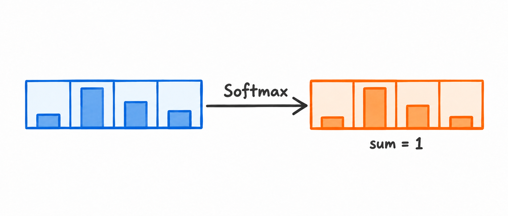
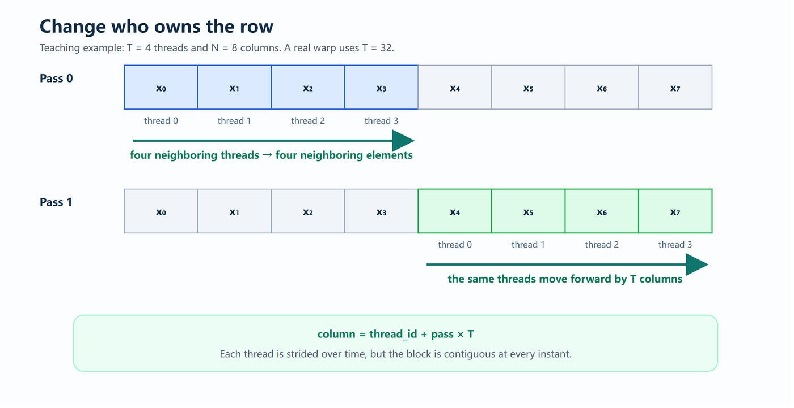
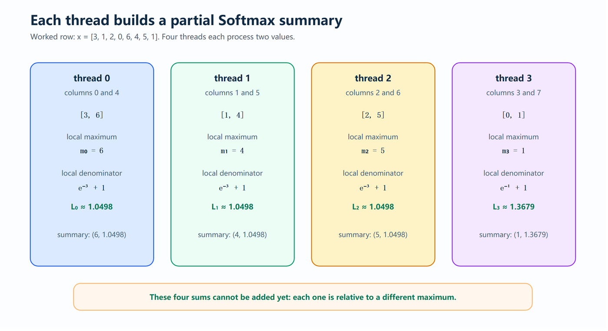
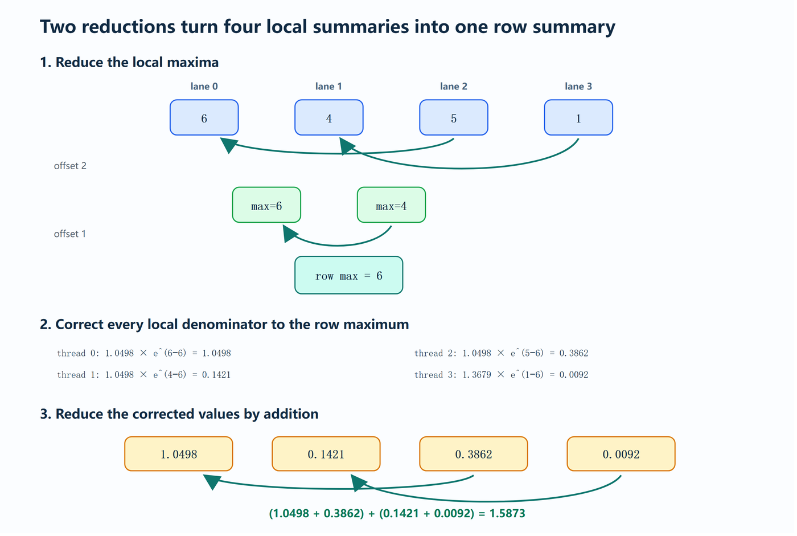
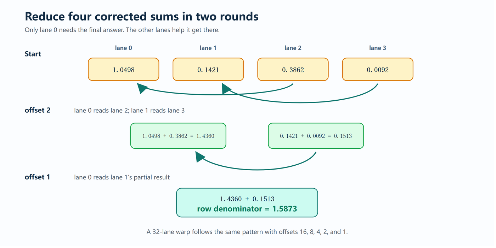

Softmax是注意力机制里绕不开的一步，也是典型的低算术强度操作：它要做指数、减法和除法，却几乎全程被内存带宽卡住。这篇文章把它的优化过程完整走了一遍，从最直接的一行一线程实现，一直做到一个warp一行。
结论先行：先去数值不稳定，再用在线Softmax把三遍读取压成两遍，最后用warp协作把非合并访问变成合并访问：理论算术强度没变，但有效算术强度从0.0417提到0.333 FLOPs/byte。
Softmax是Transformer注意力机制里非常重要的一环：它把原始的注意力分数转换成概率分布，输出中每个元素都落在0到1之间，且所有元素之和为1。对包含N个元素的输入向量x，它的定义是：softmax(x) 的第i个分量等于e的x_i次方，除以所有元素指数的总和。
照着这个式子直接实现会有一个问题：指数函数增长极快，一个较大的x_i就会让e^{x_i} 溢出。为了数值稳定，我们先求出输入向量中的最大值m，再把每个元素都减去m之后取指数。注意，给每个元素减去同一个值并不会改变最终的概率分布，但此时最大的指数变成了e的0次方，也就是1：既避免了指数溢出，又得到一个数值稳定的实现。

把最大指数压到1，是所有快速实现的前提。一个数值不稳定的Softmax再快也没有意义。
假设输入是矩阵X[M, N]。最直接的想法是给每一行分配一个线程，让它独立地对这一行做Softmax：相当于并行计算M个各含N个元素的向量。这个线程先走一遍自己的行找出最大值，再走一遍算出分母，最后再走一遍写出输出。
parallel for row = 0 to M - 1:
maximum = -infinity
for column = 0 to N - 1:
maximum = max(maximum, X[row, column])
denominator = 0
for column = 0 to N - 1:
denominator += exp(X[row, column] - maximum)
for column = 0 to N - 1:
Y[row, column] = exp(X[row, column] - maximum) / denominator看起来很直截了当：不同的行被并行处理，但每一行内部仍然由单个线程顺序完成。在动手改进之前，先算清楚这个算法到底做了多少工作。
依旧假设输入与输出都用FP32，每个元素占4字节，并且每一遍都从全局内存读取。
先看计算量。对一行来说，求最大值需要N−1次比较；比较不是浮点运算，我们把它们单独记。第二遍计算分母要做N次减法与N−1次加法。第三遍再做N次减法与N次除法。因此暂时不计指数函数，一行的普通浮点工作量是N + (N−1) + N + N = 4N−1次浮点运算；对全部M行就是M(4N−1) = 4MN−M。此外，每个元素的指数被计算了两次，总共2MN次指数求值。指数不是单条浮点指令，它的开销与吞吐取决于硬件，把它折进浮点计数会让结果看起来比实际更精确。
再看内存访问。朴素算法对X完整读三遍、对Y写一遍：
只用普通浮点运算来算，算术强度是 (4N−1)/(16N)，当N很大时约为4N/16N = 0.25 FLOPs/byte。也就是说，还没看用了多少并行度，这已经是一个低算术强度的算法：大约每传输4个字节才做一次普通浮点运算。指数求值确实增加了计算量，但它不会减少那三遍完整的输入读取。
如果用一个简化计数、把每次指数当作一次操作，算法做了6MN−M次操作，操作强度接近0.375 operations/byte。这个数字可用于自家kernel之间的粗略比较，但不要把它与硬件无关的浮点计数混为一谈。
这个实现里藏着两个问题。第一是不必要的重复迭代：同一行被走了三遍，每个输入元素从全局内存取了三次，而且指数在第二遍算过一次、第三遍又算了一次。第二是非合并的内存访问：一个线程独占一整行，于是warp里相邻线程读的是不同行的同一列，地址相隔N个元素。这个访问模式我们在GEMV那一章已经研究过，这里不再展开，稍后会回来修掉它。
| 操作 | 传输元素 | 传输字节 |
|---|---|---|
| 读X求最大值 | MN | 4MN |
| 读X计算分母 | MN | 4MN |
| 读X计算输出 | MN | 4MN |
| 写回Y | MN | 4MN |
| 合计 | 4MN | 16MN |
先看第一个问题：能不能在同一遍里同时求出最大值和分母？
分母是相对整行最大值定义的，而我们从左往右读的时候，还不知道最终的最大值是多少。但其实，我们并不需要提前知道它。
假设已经处理到下标i，目前见过的最大值是m1，那么当前的运行分母是L_i = e^{x_0−m1} + e^{x_1−m1} + … + e^{x_i−m1}。接着走到下标i+1，发现x_{i+1} 比m1更大，记这个新最大值为m2。问题出现了：L_i里所有项都是相对m1计算的，现在它们需要相对m2。好消息是这有解：利用指数的乘法性质e^a·e^b = e^{a+b}，把旧的运行和乘上e^{m1−m2}，就能一次性改正所有已经处理过的元素的贡献；剩下的只是把新最大值自身的贡献e^{m2−m2} = 1加上。于是遇到新最大值时的更新就是L_{i+1} = L_i·e^{m1−m2} + 1；如果x_{i+1} 不是新的最大值，就无需改正，保持m1并正常累加：L_{i+1} = L_i + e^{x_{i+1}−m1}。
这就是在线Softmax背后的全部诀窍：不再等最后才知道最大值，而是一边读一边更新最大值，并在最大值变化时重新标定已经做过的计算。于是得到在线算法：
parallel for row = 0 to M - 1:
maximum = -infinity
denominator = 0
for column = 0 to N - 1:
current = X[row, column]
if current > maximum:
denominator = denominator * exp(maximum - current) + 1
maximum = current
else:
denominator += exp(current - maximum)
for column = 0 to N - 1:
Y[row, column] = exp(X[row, column] - maximum) / denominator最后的归一化那一遍仍然需要，但原本分开的「求最大值」和「求分母」两遍已经合并成一遍，三遍算法降到了两遍。
先看计算量。设R为全部M行中元素成为新运行最大值的总次数，总处理元素是MN个。每个元素都要与运行最大值比较，得到MN次比较（不计入浮点）。无论是否成为新最大值，都要做一次减法来形成指数，得到MN次减法，也就是MN次浮点运算。第一遍里每个元素求一次指数，得到MN次指数求值（同样单独记录）。每个元素向运行分母加一次贡献，得到MN次加法，又是MN次浮点运算。每当元素成为新的最大值，旧分母要乘以一个修正因子，这发生R次，得到R次乘法。于是第一遍的普通浮点工作量是MN + MN + R = 2MN + R次浮点运算。
然后是归一化那一遍：减去最终最大值贡献MN次浮点运算，求指数贡献MN次指数求值，除以分母贡献MN次浮点运算，合计2MN次浮点运算。两遍加起来是4MN + R次浮点运算，指数求值总共2MN次。所以这个优化并没有减少计算量，它增加了R次重新标定的乘法，换来的是更少的输入读取次数。
内存方面：
输入读取从3MN个元素降到2MN个，加上输出写入，总内存流量从16MN字节降到12MN字节。算术强度约为 (4MN+R)/(12MN) = 1/3 + R/(12MN)。通常只有很小一部分元素会成为新的运行最大值，也就是R远小于MN，此时算术强度约为1/3 ≈ 0.333 FLOPs/byte。从0.25提到约0.333，注意这个提升不是来自更少的浮点运算：实际上我们做得略多：而是来自消除了对输入矩阵的一整遍读取。
| 操作 | 传输元素 | 传输字节 |
|---|---|---|
| 读X更新最大值与分母 | MN | 4MN |
| 读X计算输出 | MN | 4MN |
| 写回Y | MN | 4MN |
| 合计 | 3MN | 12MN |
第一个问题解决了。接下来看能否利用合并的内存访问模式进一步优化这个kernel。目前的实现仍然把一整行交给一个线程，这很糟糕：相邻线程读取的是不同行里同一列的值，它们的地址相隔N个元素。我们必须重新实现这个算法，不再把一行交给一个线程，而是把一整行交给一个线程块：
block 0 -> row 0
block 1 -> row 1
block 2 -> row 2
...假设一个block负责一行，接下来还要决定这一行的各列如何分配给块内的线程。最自然的映射是：
thread 0 -> columns 0, T, 2T, ...
thread 1 -> columns 1, T + 1, 2T + 1, ...
thread 2 -> columns 2, T + 2, 2T + 2, ...
...写成一条索引规则就是column = threadIdx.x + kT，其中k = 0, 1, 2, …。用一个极小的例子验证：假设一行有8个元素、block有4个线程。第一轮循环里四个线程分别读取x[0]、x[1]、x[2]、x[3]；下一轮每个线程向前移动4个位置，读取x[4]、x[5]、x[6]、x[7]。
thread 0 -> x[0]
thread 1 -> x[1]
thread 2 -> x[2]
thread 3 -> x[3]thread 0 -> x[4]
thread 1 -> x[5]
thread 2 -> x[6]
thread 3 -> x[7]
可以看到，单个线程随时间前进时跳过T个元素，但在同一瞬间，相邻线程读取的是相邻元素。在真实warp中T = 32：第一轮循环读第0到31列，第二轮读第32到63列，以此类推。因此每一轮都产生一个由32个FP32组成的合并访问块。这正是我们想要的访问模式：但我们也打破了点别的：现在每个线程只能看到整行的一个切片。
用这样一行来举例：x = [3, 1, 2, 0, 6, 4, 5, 1]。四个线程的分工变成：
thread 0 -> [x0, x4] -> [3, 6]
thread 1 -> [x1, x5] -> [1, 4]
thread 2 -> [x2, x6] -> [2, 5]
thread 3 -> [x3, x7] -> [0, 1]每个线程可以对自己的两个值跑在线Softmax，但它只会产出一个局部最大值和一个局部分母：

local maxima = [6, 4, 5, 1]
local denominators = [1.0498, 1.0498, 1.0498, 1.3679]我们真正需要的是整行的一个最大值与一个分母。也就是说，要把 [6, 4, 5, 1] 变成一个值。我们可以让线程0去顺序读另外三个值求最大，但那样又回到了一个线程干所有活。更好的做法是让线程两两比较：第一轮比较相隔两个位置的值，四个候选变成两个；第二轮再比较剩下的两个，线程0就拿到了整行的最大值。
thread 0 -> max(6, 5) = 6
thread 1 -> max(4, 1) = 4thread 0 -> max(6, 4) = 6这个模式叫归约：每一轮都有一半候选消失。四值的例子需要两轮，而一个warp有32个值，需要五轮：
offset 16 -> 32 values become 16
offset 8 -> 16 values become 8
offset 4 -> 8 values become 4
offset 2 -> 4 values become 2
offset 1 -> 2 values become 1注意，归约32个值仍然要做31次比较，比较次数并没有神奇地减少。区别在于，这31次比较发生在五个并行轮次中，而不是一条31次的串行链上。
拿到行最大值之后，下一步是把各线程的局部分母加起来。但在相加之前请注意：线程0的分母是相对6算的，线程1用4，线程2用5，线程3用1。
thread 0 -> 1.0498 is relative to 6
thread 1 -> 1.0498 is relative to 4
thread 2 -> 1.0498 is relative to 5
thread 3 -> 1.3679 is relative to 1直接把这些数相加是错的，因为它们的指数基于不同的最大值。相加之前，需要先把四个分母都表达为相对行最大值6的形式：而这正是在线Softmax里已经学过的方法：如果某个线程的局部最大值是m_t、局部分母是L_t，就用L_t·e^{m_t−m} 来校正，其中m是整行的最大值。逐个应用后得到约1.0498、0.1421、0.3862、0.0092，四个分母就都相对同一个最大值了，下一步才是求和。

求和归约与求最大值遵循完全相同的模式，只是把max换成加法。校正后的值是 [1.0498, 0.1421, 0.3862, 0.0092]：第一轮线程0得到1.0498 + 0.3862 = 1.4360，线程1得到0.1421 + 0.0092 = 0.1513；第二轮线程0得到1.4360 + 0.1513 = 1.5873。
thread 0 -> 1.0498 + 0.3862 = 1.4360
thread 1 -> 0.1421 + 0.0092 = 0.1513thread 0 -> 1.4360 + 0.1513 = 1.5873
于是整行的分母L = 1.5873。至此计算Softmax所需的一切都齐了：行最大值是6，行分母是1.5873，每个线程现在可以重新访问自己的列并写出对应的输出。
我们一直在说线程0从线程2读值、线程1从线程3读值，但这些局部值都保存在不同线程的寄存器里。一个线程如何读取另一个线程的寄存器？答案还是 __shfl_down_sync：与GEMV那篇工作记录里用到的正是同一个东西：它让一个线程读取同一warp内另一个线程持有的寄存器值。
__device__ __forceinline__ float warpReduceMax(float value) {
for (int offset = 16; offset > 0; offset /= 2) {
value = max(
value,
__shfl_down_sync(0xffffffff, value, offset)
);
}
return value;
}
__device__ __forceinline__ float warpReduceSum(float value) {
for (int offset = 16; offset > 0; offset /= 2) {
value += __shfl_down_sync(0xffffffff, value, offset);
}
return value;
}通常情况下，调用一个函数意味着跳转到该函数、执行完再返回；而当函数被内联时，编译器会把函数的指令直接放在调用处。__forceinline__ 就是在告诉CUDA编译器强制内联，而不是让它自己决定。对warpReduceMax、warpReduceSum这类辅助函数来说这很合理：它们很小、被频繁调用，我们也不希望为一次五步归约再套上一层函数调用。内联并不改变函数算什么、也不改变线程如何协作，它只改变编译器把指令放在生成的GPU代码里的位置。代价是，强行内联一个很大的函数会让编译产物显著变大，所以我们主要用它来处理这类小辅助函数。
把这一行拆开看：在 __shfl_down_sync(0xffffffff, value, offset) 里，0xffffffff是一个32位掩码、每个bit对应一个lane，全1表示warp内全部32个lane都参与这次shuffle。这里这样做是合法的，因为整个warp都在执行这次归约；如果只有部分lane参与，掩码就必须描述那个子集。value是当前lane持有的数字，由于每个lane都会调用这个函数，每个lane都传入自己的值，函数把「向前偏移offset个位置」的那个lane的值给自己。offset则告诉一个lane应该沿warp往下读多远：lane l收到lane l+offset持有的值。
__shfl_down_sync(0xffffffff, value, offset)用四值的例子：初始时lane 0到lane 3的value分别是6、4、5、1。offset = 2时，lane 0拿到lane 2的5，lane 1拿到lane 3的1；shuffle只负责取来伙伴值，外面的max才真正更新结果：lane 0得到max(6,5) = 6，lane 1得到max(4,1) = 4。剩下的值是 [6, 4]，offset = 1时lane 0收到lane 1更新后的4，得到max(6,4) = 6。
lane 0 1 2 3
value 6 4 5 1float other_value = __shfl_down_sync(0xffffffff, value, 2);lane 0: value = max(6, 5) = 6
lane 1: value = max(4, 1) = 4lane 0: value = max(6, 4) = 6这就是这条内建指令做的全部事情：__shfl_down_sync搬运伙伴的值，外层的max或加法决定如何用这个值更新运行结果。在真实的32 lane warp里，每一轮之后其实只有低半部分持有有用的合并结果，但掩码指定的所有lane仍然会执行shuffle。offset为16时lane 0读lane 16、lane 1读lane 17，之后offset不断减半，直到lane 0持有最终结果。这些值不需要经过全局内存，甚至不需要经过共享内存，它们直接在warp内部的寄存器之间移动。只有lane 0持有最终的归约值；而归一化阶段每个lane都需要行最大值与分母，因此lane 0再把它们广播回整个warp。
现在可以写出完整算法了：
one warp processes one row:
every lane runs online Softmax over columns
lane_id, lane_id + 32, lane_id + 64, ...
row_max = reduce_max(local_max)
broadcast row_max from lane 0
corrected_denominator =
local_denominator * exp(local_max - row_max)
row_denominator = reduce_sum(corrected_denominator)
broadcast row_denominator from lane 0
every lane revisits its columns and writes:
exp(X[row, column] - row_max) / row_denominator目前我们刻意采用「一个warp一行」。如果以后用多个warp处理同一行，仅靠warp shuffle就不够了，因为shuffle不能跨warp边界，那时需要额外通过共享内存做一次归约。在真正需要之前，先不要把这套机制加进来。
先看内存。在线算法仍然把每个输入读两遍、把每个输出写一遍：
所以有效字节数没有变化，变化的是这些字节通过内存系统的效率。回想GEMV那一章的内存事务效率：当一个线程独占一行时，warp从内存系统请求1024字节，却只用到其中128字节，效率只有12.5%；而当一个warp横跨一行读取时，同样的128个有用字节只占四个32字节扇区，效率是1。在这个简化的事务模型下，有效流量从12MN/(1/8) = 96MN字节降到12MN/1 = 12MN字节，内存事务效率最多提升8倍。不过别急着下结论：这不代表kernel一定会快8倍，缓存命中、对齐、行长、指数运算与归约工作都会影响最终运行时间。要点在于，我们不再把每8个被搬运的字节里有7个白白扔掉。忽略不大的归约开销，有效算术强度从大约4MN/96MN = 1/24 ≈ 0.0417 FLOPs/byte提升到大约4MN/12MN = 1/3 ≈ 0.333 FLOPs/byte。我们没有改变Softmax的理论算术强度，只是不再让糟糕的访问模式把它的有效算术强度压低。
再看计算与通信：归约当然不是免费的。设warp大小为W = 32：求行最大值需要W−1 = 31次比较；校正局部分母需要W次减法、W次指数求值与W次乘法；归约校正后的分母需要W−1 = 31次加法。因此每行的普通浮点开销是 (W + W + W−1) = 3W−1次浮点运算，乘以M行就是M(3W−1) 次额外浮点运算，另外还有MW次额外的指数求值。对包含成百上千个元素的行来说，这点固定工作量相比全部MN个元素的工作量很小。
通信量先用四线程的例子数清楚：求最大值用了两轮（线程0与1分别从线程2与3读，第二轮线程0从线程1读），再加上把最大值广播出去一次，共3步；分母完全重复同样的模式，又是3步。所以四线程完成一次完整Softmax需要6个warp级通信步。推广开来：每一轮归约都把剩余值的数量减半，归约W个值需要 ⌈log₂W⌉ 轮，而Softmax有两次归约与两次广播，因此通信步数是2⌈log₂W⌉ + 2；对32线程的完整warp就是2×5 + 2 = 12步：求最大值五次shuffle、广播最大值一次、求和五次shuffle、广播最终分母一次。所有32个lane一起执行每一步，并不是把32条消息依次发送；这些值也直接在寄存器之间移动，完全不进入那12MN字节的全局内存流量。如果一次shuffle耗时t_shuffle，一行的通信时间约为 (2⌈log₂W⌉ + 2)·t_shuffle。此前一个线程要处理每一遍的全部N个元素，现在每个lane每遍只处理约 ⌈N/W⌉ 个元素，然后付出这点固定通信开销。我们在warp内部加了一点通信，换来的是合并的内存访问和32个线程共同处理一行：对一个内存受限的kernel来说，这笔交易相当划算。
| 操作 | 传输元素 | 传输字节 |
|---|---|---|
| 第一次读X | MN | 4MN |
| 第二次读X | MN | 4MN |
| 写回Y | MN | 4MN |
| 有效流量合计 | 3MN | 12MN |
到这里，最终kernel的每一块都齐了：一个block恰好包含一个warp，一个warp负责一行；lane 0处理第0、32、64… 列，lane 1处理第1、33、65… 列，以此类推。第一遍里，每个lane在自己的寄存器里维护自己的最大值与分母；随后warp把这些局部结果合并起来，广播两个行级数值，最后再做一趟合并访问把输出写出去。
#include <cuda_runtime.h>
#include <math_constants.h>
__device__ __forceinline__ float warpReduceMax(float value) {
for (int offset = 16; offset > 0; offset /= 2) {
value = fmaxf(
value,
__shfl_down_sync(0xffffffffu, value, offset)
);
}
return value;
}
__device__ __forceinline__ float warpReduceSum(float value) {
for (int offset = 16; offset > 0; offset /= 2) {
value += __shfl_down_sync(0xffffffffu, value, offset);
}
return value;
}
__global__ void softmax_warp_kernel(
const float* __restrict__ input,
float* __restrict__ output,
int M,
int N
) {
// One block contains one warp, and one warp owns one row.
int row = blockIdx.x;
int lane = threadIdx.x;
if (row >= M) {
return;
}
const float* input_row = input + row * N;
float* output_row = output + row * N;
float local_max = -CUDART_INF_F;
float local_denominator = 0.0f;
// First coalesced pass: compute online statistics for this lane.
for (int column = lane; column < N; column += warpSize) {
float current = input_row[column];
if (current > local_max) {
local_denominator *= expf(local_max - current);
local_max = current;
}
local_denominator += expf(current - local_max);
}
// Reduce the local maxima. The complete result lands in lane 0.
float row_max = warpReduceMax(local_max);
// Broadcast the row maximum from lane 0 to every lane.
row_max = __shfl_sync(0xffffffffu, row_max, 0);
// Put every local denominator on the same scale.
float corrected_denominator =
local_denominator * expf(local_max - row_max);
// Reduce the corrected denominators and broadcast their sum.
float row_denominator = warpReduceSum(corrected_denominator);
row_denominator =
__shfl_sync(0xffffffffu, row_denominator, 0);
// Second coalesced pass: normalize and write the row.
for (int column = lane; column < N; column += warpSize) {
output_row[column] =
expf(input_row[column] - row_max) / row_denominator;
}
}
void launch_softmax(
const float* __restrict__ input,
float* __restrict__ output,
int M,
int N
) {
constexpr int threads_per_block = 32;
dim3 block_size(threads_per_block);
dim3 grid_size(M);
softmax_warp_kernel<<<grid_size, block_size>>>(
input,
output,
M,
N
);
}启动器只用了32个线程，因为归约辅助函数是在单个warp内部通信的。kernel假设每一行至少包含一个元素；一行可以远宽于32个元素，循环只是让每个lane拿到更多相隔warpSize的列。注意，代码的顺序与我们手算的例子完全一致：
compute one (local_max, local_denominator) pair per lane
-> reduce and broadcast row_max
-> correct every local_denominator
-> reduce and broadcast row_denominator
-> normalize the row为一个一行数学公式就能写完的操作，我们做了不少工作。从稳定的Softmax公式出发，写出最直接的CUDA kernel，然后不断修改算法，直到它的执行方式匹配GPU读取内存、共享工作的方式。如果要把整篇记录压缩成几条，就是下面这些。
数值稳定性优先。减去行最大值让最大的指数等于1，防止大输入溢出；一个快但数值不稳定的Softmax是没有用的。
「显而易见的并行」仍然让每一行保持串行。把一行交给一个线程确实并行化了M行，但一行之内的每个操作仍然由单个线程完成。
在线Softmax用浮点运算换掉了一整趟内存访问。在最大值变化时校正运行中的分母，把求最大值与求分母两遍合并；全局内存流量从16MN字节降到12MN字节，代价是增加了一点重新标定的乘法。
合并访问由warp决定，而不是由单个线程决定。一个线程一行时，相邻lane访问的是不同的行；一个warp一行时，相邻lane访问的是相邻的列。
转向warp模式意味着没有任何线程掌握完整答案。每个线程只产出局部最大值与局部分母，warp归约把32个局部答案合成一个行级答案。
把局部分母相加之前，必须先统一到同一个最大值。因子e^{m_local−m_row} 让每个局部分母在求和归约之前处在同一尺度上。
一点片上通信换来了大量可用的并行。一个32线程的warp每行付出12个通信步，换来32个线程共同处理一行、以及合并的全局内存访问。
我们没有改变Softmax的数学定义，只改变了统计量的计算顺序与工作的归属。这足以消除一整遍输入读取、恢复高效的内存事务，并把每一行内部的并行度释放出来。
参考：https://heyyanshuman.com/posts/making_softmax_fast